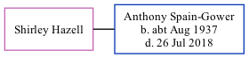

Shirley Hazell, the wife of Anthony Alfred Spain-Gower (the fourth cousin on the father's side of Nigel Horne), and married Anthony in Thanet, Kent, England around Nov 19571.
Citations
England & Wales Marriages 1837-2005 - Findmypast
Family Tree

Generated by ged2site. Last updated on Nov 13, 2024